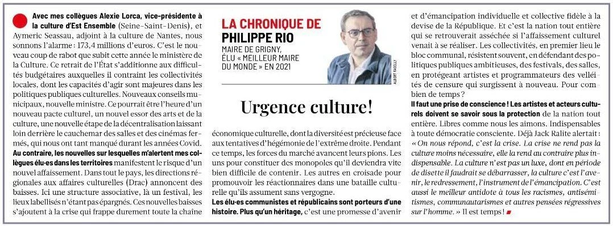

Chronique de L’Humanité
« Urgence culture ! » La chronique de Philippe Rio
Date indiquée par Facebook · 25 mai 2026
Repères éditoriaux
Dans L’Humanité, Philippe Rio alerte sur la baisse du budget de la culture et la concentration du pouvoir éditorial autour de Vincent Bolloré. Il défend la culture comme un moyen d’émancipation.
Texte conservé avec la publication
Urgence culture ! La chronique de Philippe RIO dans l'Humanité
Alors que Vincent Bolloré accélère sa mainmise sur l'édition, la production cinématographique, etc. l’État retire 173,4 millions sur le budget du ministère de la culture. La culture n'est pas un luxe, la culture c'est l'avenir, le redressement, l’instrument de l'émancipation.
Urgence culture ! La chronique de Philippe RIO dans @[100064860845478:2048:l'Humanité]
Alors que Vincent Bolloré accélère sa mainmise sur l'édition, la production cinématographique, etc. l’État retire 173,4 millions sur le budget du ministère de la culture. La culture n'est pas un luxe, la culture c'est l'avenir, le redressement, l’instrument de l'émancipation.

Sources
Archive rouge · export Facebook · AR-0002-FB-00771
À lire aussi · Pass culture, non à la punition collective ! · Le lien d’origine